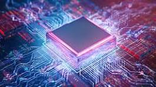

Processors
A processor, also known as a central processing unit (CPU), is the brain of a computer system. It performs all the essential calculations and executes instructions to make a computer work. Processors come in different types, architectures, and performance levels, each designed for specific tasks and workloads.
What is a Processor?
A processor, or CPU, is a microchip responsible for executing instructions and performing calculations in a computer system. It is the primary component that processes data and controls the flow of information within the computer. The CPU fetches instructions from memory, decodes them, and performs the necessary operations to carry out the desired tasks.

Key Components of a Processor
A typical processor consists of several essential components, including:
- Cores: Modern processors often have multiple processing cores, which are individual processing units capable of executing instructions independently. The number of cores in a CPU determines its ability to handle multiple tasks concurrently.
- Cache: Cache memory is a small, fast memory located close to the CPU cores. It stores frequently used data and instructions to reduce the time required to access main memory, thus improving overall performance.
- Instruction Set: The instruction set defines the set of commands that a processor can understand and execute. It determines the capabilities and complexity of the operations that a CPU can perform.
- Registers: Registers are high-speed storage locations within the CPU that hold data and instructions for immediate use during processing operations.
- Clock Speed: The clock speed, measured in gigahertz (GHz), refers to the frequency at which a processor executes instructions. Higher clock speeds generally translate to faster processing power.
Processor Architectures
Processors are designed based on different architectures, which determine their instruction sets, register configurations, and overall design principles. Common processor architectures include:
- x86: The x86 architecture is the most widely used processor architecture, developed by companies like Intel and AMD. It is the predominant architecture for desktop and server computers.
- ARM: The ARM (Advanced RISC Machines) architecture is widely used in mobile devices, such as smartphones and tablets, due to its low power consumption and high performance-per-watt ratio.
- RISC-V: RISC-V (Reduced Instruction Set Computer) is an open-source instruction set architecture, gaining popularity in various applications, including embedded systems, data centers, and high-performance computing.
Importance of Processors
Processors are the heart of modern computing systems, determining their overall performance, efficiency, and capabilities. Choosing the right processor is crucial when building or upgrading a computer, as it influences factors such as computing power, energy consumption, and compatibility with other hardware components.
Advancements in processor technology, such as increasing core counts, higher clock speeds, improved cache designs, and new architectures, continue to push the boundaries of computing power, enabling more complex applications, faster data processing, and enhanced user experiences.